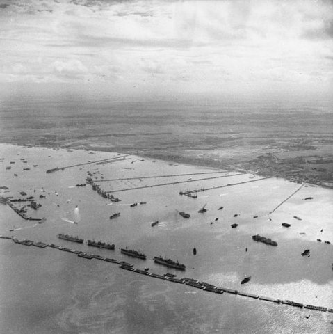

Le Square et l'Avenue d’Arromanches
Autrefois avenue Labatut, elle prit en 1949 le nom d’une ville normande : Arromanches. C'est face à ce village que, juste après le débarquement du 6 juin 1944, les Alliés établirent le port Mulberry B, un port artificiel provisoire, afin de permettre de débarquer du matériel lourd, sans attendre la conquête de ports en eaux profondes, tels que ceux du Havre ou de Cherbourg. Ce port fut mis en service le 14 juin.
